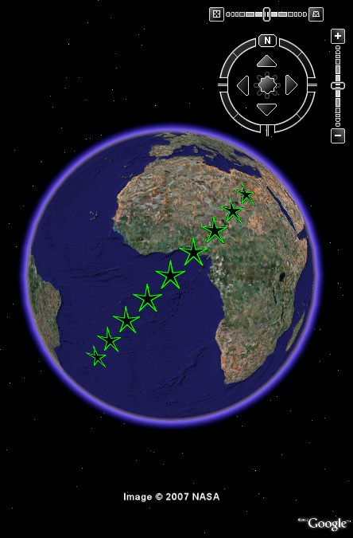

Visualization of 2D polygons parallel to the Earth's surface.
Visualization of 2D polygons parallel to the Earth's surface.

| kmlStr = ge_poly(X,Y) |
| kmlStr = ge_poly(X,Y,Parameter,Value) |
| kmlStr = ge_poly(X,Y) |
Draws polygons at coordinates specified by vectors 'X' and 'Y'. Coordinates belonging to different polygons should be separated by NaNs. Unclosed polygons are closed by default if they consist of 3 or more points. By default the polygon color and polygon outline will be fully opaque white.
| kmlStr = ge_poly(X,Y,Parameter,Value) |
In addition to the above, this syntax also allows for specification of a number of parameters regarding the appearance of the polygon when viewed in Google Earth. Assigning values to the parameters can be accomplished by inclusion of an alternating sequence of parameters and their value. The table below provides an overview of the authorized options for ge_poly(). The order in which the parameters are included does not matter. Please be aware that the options are case-sensitive. Examples are provided further down.
| Parameter | Description |
| 'altitude' | Height difference relative to the plane of reference (see parameter 'altitudeMode'). |
| 'altitudeMode' | Specifies which plane of reference to use. Must be one of 'absolute', 'relativeToGround' or 'clampToGround'. Default is 'clampToGround'. |
| 'autoClose' | If polygons do not start at the location where they end, they are unclosed. The Google Earth Viewer automatically closes unclosed polygons consisting of more than 3 points. Though the Google Earth Viewer closes the outline of unclosed polygons of 3 points, it does not fill the polygon surface. However, unclosed polygons consisting of 3 or more points will be automatically closed during generation of "kmlStr" if 'autoClose' is set to logical(1) or true. Default value is true. |
| 'description' | A description of objects can be included using this parameter. Its value must be passed as a character array. It will be displayed in the Google Earth Viewer within a pop-up text balloon. |
| 'extrude' | See Extruding objects. |
| 'lineColor' | Line color specification, including transparency. Color value format must be passed as a character array according to the format string 'TTRRGGBB', with 'TT' representing transparency; 'RR', 'GG', and 'BB' representing red, green, and blue colors, respectively. Intensity values are denoted as two-digit hexadecimal numbers ranging from 00 to FF. For example, '80FF0000' is semi-transparent red and 'FF0000FF' is fully opaque blue. |
| 'lineWidth' | Width of the polygon outline. |
| 'msgToScreen' | Defines whether verbose feedback is provided by the function when it is accessed and when it finishes. Default is false (which is equivalent to logical(0), but quicker). |
| 'name' | This character array will be used within the Google Earth Viewer 'Places' pane to identify objects. |
| 'polyColor' | Polygon color specification, see parameter 'lineColor'. |
| 'snippet' | A short description of the feature. In Google Earth, this description is displayed in the Places panel under the name of the feature. If a Snippet is not supplied, the first two lines of the description are used |
| 'tessellate' | See Tessellation. |
| 'timeSpanStart' | See Dynamic visualization. |
| 'timeSpanStop' | See Dynamic visualization. |
| 'visibility' | Whether the object is initially visible. Must be passed to ge_poly() as a numerical value 1 or 0. Visibility state can be changed within the Google Earth Viewer by clicking the object's checkmark in the 'Places' pane. |
Latitudes on the Southern hemisphere must be passed as negative values. Same for longitudes on the Western hemisphere.
Latitudes and longitudes should be passed in units of decimal degrees (also known as fractional degrees). Google Earth uses Simple Cylindrical projection (also known as Plate Carée) with a WGS84 datum. Altitudes are in meters.
See the demo file demo_ge_poly for more details.
The source code below constitutes an example of how ge_poly() may be used.
angleRad = linspace(0,2*pi,6); pentaX = [4*sin(angleRad);sin(angleRad+pi*0.2)]; pentaY = [4*cos(angleRad);cos(angleRad+pi*0.2)]; x = pentaX(:); y = pentaY(:); X = []; Y = []; for p=-25:6:25 X=[X;NaN;x+p]; Y=[Y;NaN;y+p]; end kmlStr = ge_poly(X,Y,'polyColor','FF000000',... 'lineColor','FF00FF00',... 'lineWidth',2); ge_output('example_ge_poly.kml',kmlStr)
The above will generate a *.kml file that looks like the image below when opened in the Google Earth viewer.
